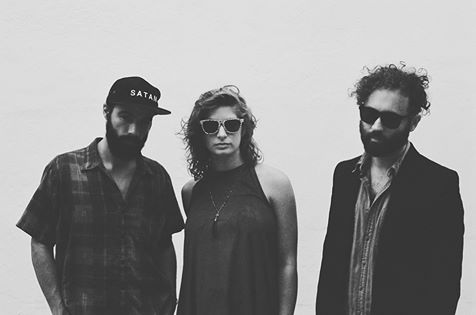
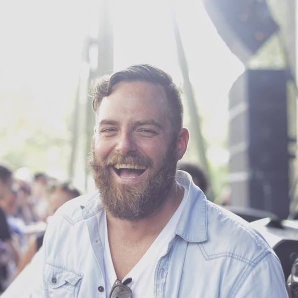
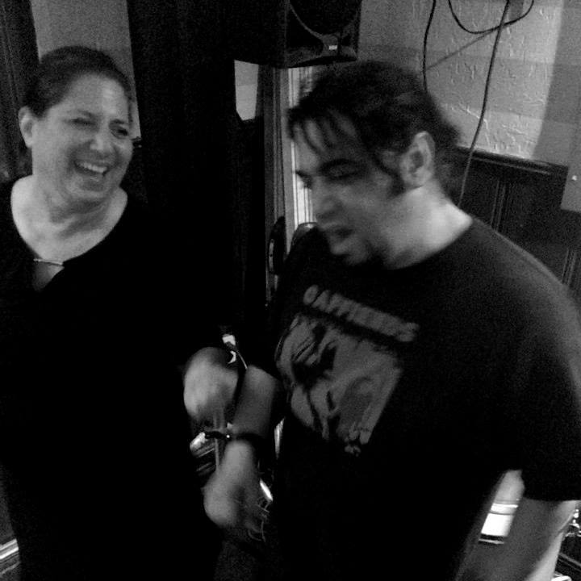

Welcome to the Concrescence podcast! This is a portal to which the cosmic conversation can flow and morph into the ear holes of people who might be listening! Here we talk about a broad spectrum of esoteric topics and discuss the ever spinning wheel of life we are all experiencing. To quote the prolific bard Terrance Mckenna, "We are moving towards a great attractor." Lets move together!
Episode One, December 19th, 2016 "The CarRamble"
Episode Two, January 6th, 2017 "Baby Coughs With The Young Step"
The Young Step Stops by the studio to talk about their plans for 2017 and what its been like raising a baby while being full time musicians. It was a wonderful chat and a great way to start the day! I hope you guys enjoy this episode. Links to the young steps content will be listed below.
 https://www.facebook.com/TheYoungStep/ https://theyoungstep.bandcamp.com/Episode Three, February 28th, 2017 "Life and Music With Tim Savage"
On This episode of the Concrescence podcast we have the wonderful Tim Savage grace the room. We talk about the layers of life and our local music scene in Saint Augustine, Florida. Tim Savage is a entrepreneur, musician, rapper, internet marketer, photographer, and all around good dude. I hope this podcast brings you positivity and inspiration to keep growing! You can find Tim Savage and his new single here....
 https://www.facebook.com/timothywsavage https://twitter.com/timsavage?lang=en http://timsavage.co/cypher/Episode Four, March 7th, 2017 "Saving The Original Music with Momma Jill And Dave Wernicke"
Dave and Momma Jill are the local heroes of the Saint Augustine, Fl Music scene. They have been hosting live music at their resident bar Shanghai Nobby's for over 30 years! We get into the back story of how Nobby's gained its roots and how Dave And Jill sowed their wild oats together! This is a heart felt episode full of life lessons, funny stories of the past, and a positive outlook to the future of music. Thank you Dave and Jill for carrying the torch. Much love.
 WWW.ShanghaiNobbys.com